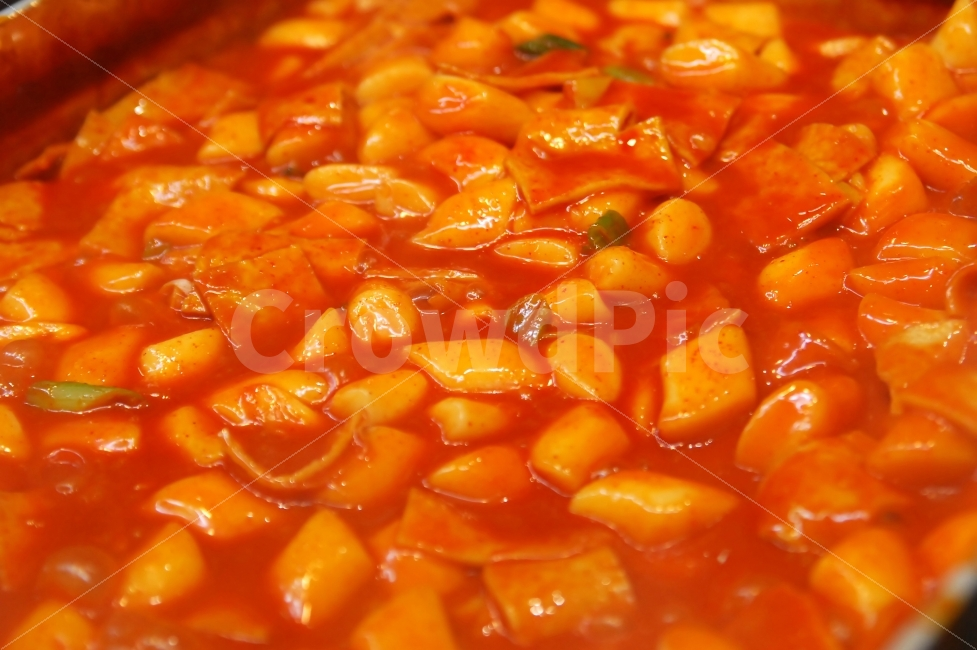

| 찌는 떡 | 구름떡 · 무지개떡 · 무치 · 백설기 · 개떡 · 취떡 · 가랍떡 · 깻잎떡 · 서속떡 · 조침떡 · 메싹떡 · 만경떡 · 율무떡 · 감자떡 · 조랑떡 · 술떡 · 망개떡 · 두텁떡 · 송편 · 꿀떡 · 시루떡 · 도토리떡 · 외랑떡 · 마꽃떡 · 귀리떡 · 근대떡 · 느티떡 · 석탄병 · 보리떡 · 호박떡 · 고구마떡 · 복령떡 · 상추떡 · 감떡 · 달떡 · 달팽이떡 · 댑싸리떡 · 옥수수떡 · 솔방울떡 · 콩떡 · 여주산병 · 혼돈병 · 김치떡 · 순채떡 · 봉치떡 · 새미떡 · 임지떡 · 인삼떡 · 거말떡 · 칠곡떡 · 청치주먹떡 · 밀기울떡 |
|---|---|
| 치는 떡 | 가래떡 · 개피떡 · 고치떡 · 절편 · 인절미 · 좁쌀떡 · 찹쌀떡 · 바나나떡 · 배피떡 · 숯떡 · 송기떡 · 오쟁이떡 |
| 지지는 떡 | 구절떡 · 괴명떡 · 화전 · 부꾸미 · 노티 · 비지떡 · 호떡 · 빙떡 · 곤떡 |
| 삶는 떡 | 꼬장떡 · 돌래떡 · 오메기떡 · 잣구리 · 경단 · 닭알떡 · 오그랑떡 · 즘떡 |
| 기타 | 웃기떡 · 떡국 · 떡꼬치 · 떡만둣국 · 떡볶이 · 노점 떡갈비 · 모시떡 · 중국호떡 · 오방떡 · 약밥 · 당귀떡 · 주걱떡 · 물떡 · 홍천메밀총떡 · 장떡 · 당콩떡 |
쫄깃하면서 단단한 식감의 쌀떡

밀떡 특유의 부드러움과 잘 배인 양념맛과 그 사이에서도 유지되는 밀떡만의 고소한 맛

과거에는 쌀보다 가격이 싼 밀가루로 단가 절감과 쌀 절약을 위해 떡을 만들어 떡볶이에 사용했지만,
오늘날에는 쌀이 남아도는 세상이 되었고 밀값도 많이 오르면서
밀 떡볶이나 쌀 떡볶이나 가격 차이가 크게 나진 않게 되었다.
즉 취향따라 먹으면 됩니다^^!